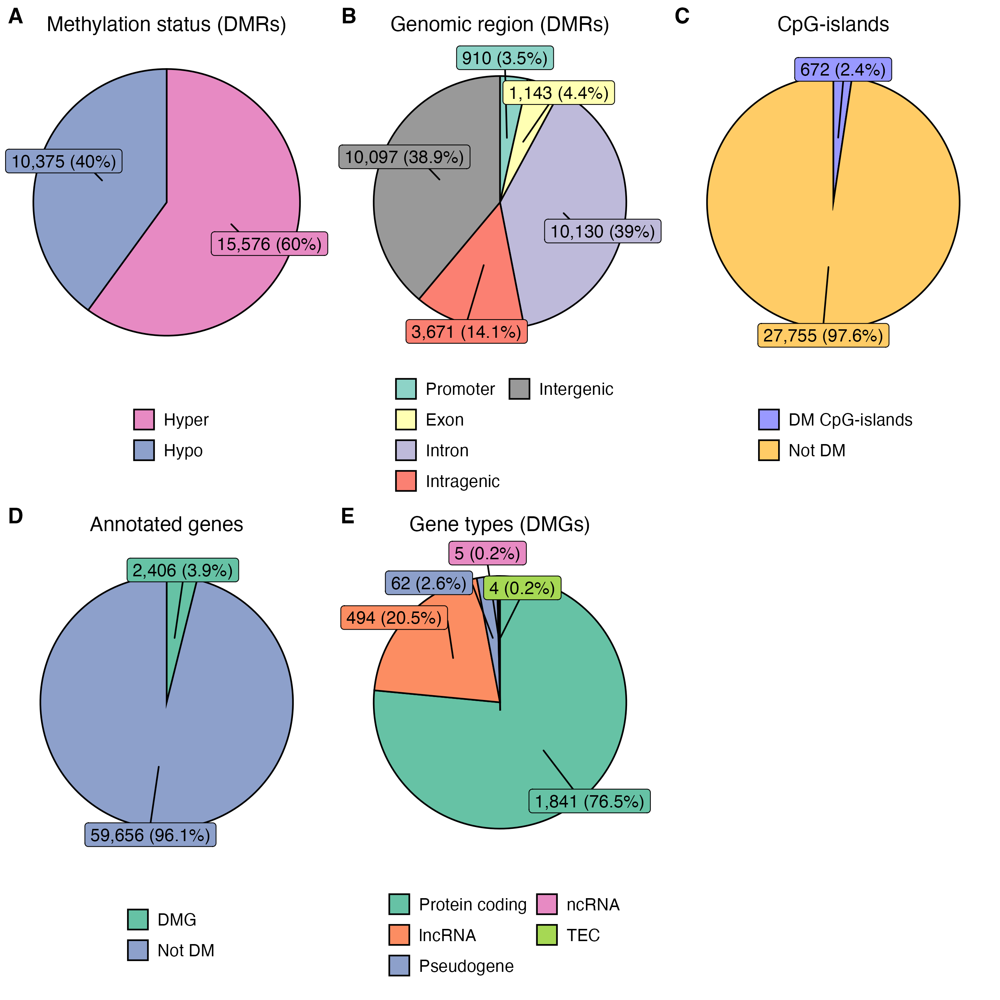
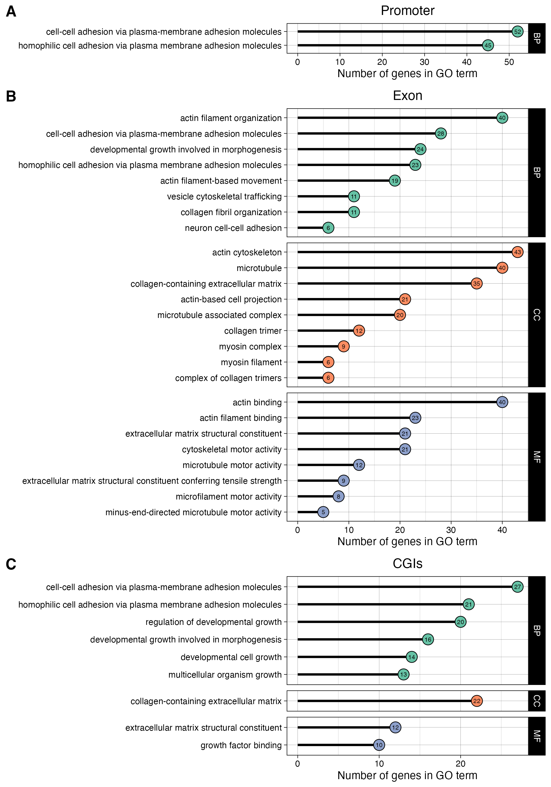

Research Trends in Toxicology
This repo holds the code needed for Methylome Analysis lecture in the Research Trends in Toxicology course. The lecture generates figure 1 and 3 from the PFOS MCF10A EMseq paper.
File structure
project/
├── bin/
│ ├── cpg_positions.R
│ ├── diffmeth.R
│ ├── ensembl.R
│ ├── figure1.R
│ ├── figure3.R
│ ├── gene_ontology.R
│ ├── genetable.R
│ └── methtable.R
└── data/
├── PFOS_MCF-10A_DMG.Rds
├── PFOS_MCF-10A_DMR.Rds
├── PFOS_MCF-10A_GO.Rds
├── cpgislands_GRCh38.bed
└── refseq_UCSC_GRCh38.bed🖥️ Computational analysis
🧬 Alignment & coverage
This process is beyond the scope of this lecture. In short, the nfcore/methylseq:1.6.1 was used to align the reads to the reference genome and generate the coverage files (*.cov.gz).
Differential methylation analysis
We want to identify the Differentially Methylated Regions (DMRs) focusing on CpG-sites - but we still call them regions. These DMRs are overlapped with annotated gene positions to identify Differentially Methylated Genes (DMGs), with genes being considored if a DMR is found inside the promoter or the exon, as these genomic regions when influced by DNA methylation affect the transcription machinery. DMR inside introns are not considored. Lastly, the identified DMGs are tested for gene pathway enrichment to understand which gene pathways are affected by PFOS exposure.
For this we need to complete the follow steps:
1. Map CpG-sites
Extract the exact positions of CG-motifs in the human genome, save as text file data/cpg_positions.txt.gz. This table will be used to filter out only the CpG-sites for downstream analysis. To generate the file run this in the terminal (or run the script inside Positron / Rstudio):
Rscript bin/cpg_positions.RThe script requires the following R-packages: BSgenome.Hsapiens.UCSC.hg38 and readr.
How to install R-packages
Assuming you have R already installed
Basic R-packages are installed from CRAN (install.packages()) while bioinformatic R-packages are installed from Bioconductor (BiocManager::install()). In order, to install from Bioconductor we need first to install the Bioconductor Manager, see code below:
# Install Bioconductor manager
install.packages("BiocManager")
# Install from CRAN
install.packages("readr")
# Install from Bioconductor
BiocManager::install("BSgenome.Hsapiens.UCSC.hg38")Run code with containers
Use a singularity container with a pre-install environment (OS, R, packages). Run with apptainer / singularity
# Save container as a variable
METH_SIF='library://andreyhgl/singularity-r/methylome'
# Run the container
apptainer exec $METH_SIF Rscript bin/cpg_positions.RWill generate data/cpg_positions.txt.gz.
2. Extract Ensembl dataset
Ensembl is a public project providing access to reference genomes and gene annotations. We will be extracting all the known coding and non-coding genes gene positions.
Rscript bin/ensembl.RWill generate data/ensembl_table.csv.gz.
3. Differentially methylated regions
Calulate Differentially Methylated Regions (DMRs) focusing on CpG-sites - but we still call them regions.
This script is computationally heavy: requires 500Gb ram, 10 cpus and runs for 1,5h. Hence, it’s best ran on a computer cluster, like UPPMAX.
Rscript bin/diffmeth.RWill generate data/diffmeth.csv.gz.
4. Overlap DMRs with genomics regions
Find out which genomic regions (promoter, exon, intron, intergenic, CpG-islands) overlap with the DMRs.
We’ll need two tables that hold the information for CpG-islands position and genome annotations, both of which can be downloaded from University of California Santa Cruz (UCSC) Genomics Institute. These files are included in the repo, inside data/.
Download genome annotations
Annotations can be exported from the Table Browser tool at UCSC database. To download the annotations set the parameters as follow:
CpG-islands annotations, save as
cpgislands_GRCh38.bedclade = "Mammals" genome = "Human" assembly = "Dec. 2013 (GRCh38/hg38)" group = "Regulation" track = "CpG-islands" table = "cpgIslandExt" output format = "BED" output filename = "cpgislands_GRCh38.bed" <click> "get output" <click> "get BED"- Refseq annotations, save as
refseq_UCSC_GRCh38.bed
clade = "Mammals" genome = "Human" assembly = "Dec. 2013 (GRCh38/hg38)" group = "Genes and Gene Predictions" track = "NCBI RefSeq" table = "UCSC RefSeq (refGene)" output format = "BED" output filename = "refseq_UCSC_GRCh38.bed" <click> "get output" <click> "get BED"- Refseq annotations, save as
Rscript bin/methtable.RWill generate data/PFOS_MCF-10A_DMR.Rds
Additionally, a table from the gene perspective (each row is a gene), is useful from an explanatory approach.
Rscript bin/genetable.RWill generate data/PFOS_MCF-10A_DMG.Rds
5. Calculate pathway enrichment scores
Use the R-packages clusterProfiler and org.Hs.eg.db to calculate pathway enrichment scores.
Rscript bin/gene_ontology.RWill generate data/PFOS_MCF-10A_GO.Rds
6. Generate figure 1
Generate figure 1 from PFOS MCF10A EMseq paper. The figure is composed of five plots:
- Methylation status of DMRs
- Genomic regions of DMRs
- DM CpG-islands
- Genes overlapping DMRs
- Gene types of DMRs overlapping with promoter, exon and/or CGI
Rscript bin/figure1.RFigure 1

7. Generate figure 3
Generate figure 3 from PFOS MCF10A EMseq paper. The figure shows pathway enrichment results with GO terms matching the following keywords:
- motor
- actin
- adhesion
- growth
- collagen
- myosin
- microtubule
- cytoskeletal
- junction
- extracellular
- locomotion
These keywords are matched against the gene description and are relevant genes for PFOS induced phenotypes (previously demonstrated Pierozan and Karlsson, 2018).
Rscript bin/figure3.RFigure 3
